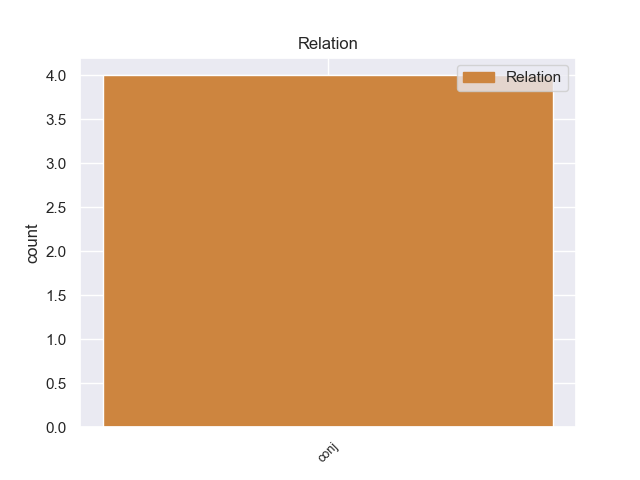
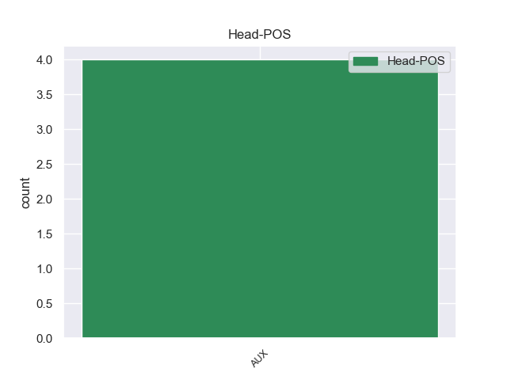
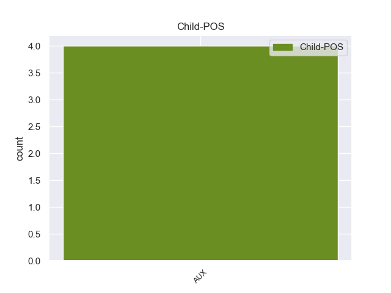

Distribution of features within this leaf



No agree examples found.
Disagree Examples:
1 यहाँ _ _ _ _ 0 _ _ _
2 की _ _ _ _ 0 _ _ _
3 गलियों _ _ _ _ 0 _ _ _
4 में _ _ _ _ 0 _ _ _
5 भटकते _ _ _ _ 0 _ _ _
6 हुए _ _ _ _ 0 _ _ _
7 आपको _ _ _ _ 0 _ _ _
8 महसूस _ _ _ _ 0 _ _ _
9 होगा हो VERB VM Gender=Masc|Mood=Ind|Number=Sing|Person=3|Tense=Fut|VerbForm=Fin|Voice=Act 0 _ _ _
10 फ्रेंच _ _ _ _ 0 _ _ _
11 लोगों _ _ _ _ 0 _ _ _
12 का _ _ _ _ 0 _ _ _
13 पूरा _ _ _ _ 0 _ _ _
14 जीवन _ _ _ _ 0 _ _ _
15 कला _ _ _ _ 0 _ _ _
16 के _ _ _ _ 0 _ _ _
17 लिए _ _ _ _ 0 _ _ _
18 समर्पित _ _ _ _ 0 _ _ _
19 है है AUX VM Mood=Ind|Number=Sing|Person=3|Tense=Pres|VerbForm=Fin|Voice=Act 9 subj _ ChunkId=VGF2|ChunkType=head|Stype=declarative|Tam=hE|Translit=hai|Vib=है
20 । _ _ _ _ 0 _ _ _
1 उमा _ _ _ _ 0 _ _ _
2 भारती _ _ _ _ 0 _ _ _
3 के _ _ _ _ 0 _ _ _
4 ऊपर _ _ _ _ 0 _ _ _
5 १० _ _ _ _ 0 _ _ _
6 साल _ _ _ _ 0 _ _ _
7 पहले _ _ _ _ 0 _ _ _
8 लगा _ _ _ _ 0 _ _ _
9 हत्या _ _ _ _ 0 _ _ _
10 के _ _ _ _ 0 _ _ _
11 प्रयास _ _ _ _ 0 _ _ _
12 व _ _ _ _ 0 _ _ _
13 दंगे _ _ _ _ 0 _ _ _
14 का _ _ _ _ 0 _ _ _
15 मामला _ _ _ _ 0 _ _ _
16 हटाने _ _ _ _ 0 _ _ _
17 के _ _ _ _ 0 _ _ _
18 लिए _ _ _ _ 0 _ _ _
19 स्थानीय _ _ _ _ 0 _ _ _
20 अदालत _ _ _ _ 0 _ _ _
21 ने _ _ _ _ 0 _ _ _
22 सरकारी _ _ _ _ 0 _ _ _
23 वकील _ _ _ _ 0 _ _ _
24 से _ _ _ _ 0 _ _ _
25 लिखित _ _ _ _ 0 _ _ _
26 अनुरोध _ _ _ _ 0 _ _ _
27 मांगा मांग VERB VM Gender=Masc|Mood=Ind|Number=Sing|Person=3|Tense=Fut|VerbForm=Fin|Voice=Act 28 comp:aux _ ChunkId=VGF|ChunkType=head|Stype=declarative|Tam=gA|Translit=māṁgā|Vib=गा_है
28 है है AUX VAUX Mood=Ind|Number=Sing|Person=3|Tense=Pres|VerbForm=Fin 0 _ _ _
29 . _ _ _ _ 0 _ _ _
1 इसके _ _ _ _ 0 _ _ _
2 बावजूद _ _ _ _ 0 _ _ _
3 जस्टिस _ _ _ _ 0 _ _ _
4 यू. _ _ _ _ 0 _ _ _
5 सी. _ _ _ _ 0 _ _ _
6 बनर्जी _ _ _ _ 0 _ _ _
7 की _ _ _ _ 0 _ _ _
8 अध्यक्षता _ _ _ _ 0 _ _ _
9 में _ _ _ _ 0 _ _ _
10 एक _ _ _ _ 0 _ _ _
11 उच्चस्तरीय _ _ _ _ 0 _ _ _
12 समिति _ _ _ _ 0 _ _ _
13 का _ _ _ _ 0 _ _ _
14 गठन _ _ _ _ 0 _ _ _
15 करना _ _ _ _ 0 _ _ _
16 और _ _ _ _ 0 _ _ _
17 उसे _ _ _ _ 0 _ _ _
18 इस _ _ _ _ 0 _ _ _
19 बात _ _ _ _ 0 _ _ _
20 का _ _ _ _ 0 _ _ _
21 पता _ _ _ _ 0 _ _ _
22 लगाने _ _ _ _ 0 _ _ _
23 के _ _ _ _ 0 _ _ _
24 लिए _ _ _ _ 0 _ _ _
25 कहना _ _ _ _ 0 _ _ _
26 है _ _ _ _ 0 _ _ _
27 कि _ _ _ _ 0 _ _ _
28 ( _ _ _ _ 0 _ _ _
29 साबरमती _ _ _ _ 0 _ _ _
30 एक्सप्रेस _ _ _ _ 0 _ _ _
31 के _ _ _ _ 0 _ _ _
32 कोच _ _ _ _ 0 _ _ _
33 संख्या _ _ _ _ 0 _ _ _
34 एस _ _ _ _ 0 _ _ _
35 - _ _ _ _ 0 _ _ _
36 ६ _ _ _ _ 0 _ _ _
37 में _ _ _ _ 0 _ _ _
38 भीड़ _ _ _ _ 0 _ _ _
39 क्यों _ _ _ _ 0 _ _ _
40 थी था AUX VM Gender=Fem|Mood=Ind|Number=Sing|Tense=Past|VerbForm=Fin|Voice=Act 69 subj _ ChunkId=VGF2|ChunkType=head|SpaceAfter=No|Stype=declarative|Tam=WA|Translit=thī|Vib=था
41 , _ _ _ _ 0 _ _ _
42 इनमें _ _ _ _ 0 _ _ _
43 से _ _ _ _ 0 _ _ _
44 अधिकांश _ _ _ _ 0 _ _ _
45 लोग _ _ _ _ 0 _ _ _
46 बेटिकट _ _ _ _ 0 _ _ _
47 क्यों _ _ _ _ 0 _ _ _
48 थे _ _ _ _ 0 _ _ _
49 , _ _ _ _ 0 _ _ _
50 और _ _ _ _ 0 _ _ _
51 इन _ _ _ _ 0 _ _ _
52 रेलयात्रियों _ _ _ _ 0 _ _ _
53 के _ _ _ _ 0 _ _ _
54 व्यवहार _ _ _ _ 0 _ _ _
55 ने _ _ _ _ 0 _ _ _
56 आग _ _ _ _ 0 _ _ _
57 की _ _ _ _ 0 _ _ _
58 घटना _ _ _ _ 0 _ _ _
59 को _ _ _ _ 0 _ _ _
60 किस _ _ _ _ 0 _ _ _
61 प्रकार _ _ _ _ 0 _ _ _
62 हवा _ _ _ _ 0 _ _ _
63 दी _ _ _ _ 0 _ _ _
64 ) _ _ _ _ 0 _ _ _
65 अपने _ _ _ _ 0 _ _ _
66 आप _ _ _ _ 0 _ _ _
67 में _ _ _ _ 0 _ _ _
68 शर्मनाक _ _ _ _ 0 _ _ _
69 है है AUX VM Mood=Ind|Number=Sing|Person=3|Tense=Pres|VerbForm=Fin|Voice=Act 0 _ _ _
70 । _ _ _ _ 0 _ _ _
1 तब _ _ _ _ 0 _ _ _
2 यह _ _ _ _ 0 _ _ _
3 भी _ _ _ _ 0 _ _ _
4 खबर _ _ _ _ 0 _ _ _
5 आई _ _ _ _ 0 _ _ _
6 थी _ _ _ _ 0 _ _ _
7 कि _ _ _ _ 0 _ _ _
8 करिश्मा _ _ _ _ 0 _ _ _
9 ने _ _ _ _ 0 _ _ _
10 तलाक _ _ _ _ 0 _ _ _
11 के _ _ _ _ 0 _ _ _
12 पेपर _ _ _ _ 0 _ _ _
13 पर _ _ _ _ 0 _ _ _
14 दस्तखत _ _ _ _ 0 _ _ _
15 करने _ _ _ _ 0 _ _ _
16 के _ _ _ _ 0 _ _ _
17 एवज _ _ _ _ 0 _ _ _
18 में _ _ _ _ 0 _ _ _
19 संजय _ _ _ _ 0 _ _ _
20 से _ _ _ _ 0 _ _ _
21 ७ _ _ _ _ 0 _ _ _
22 करोड़ _ _ _ _ 0 _ _ _
23 रुपये _ _ _ _ 0 _ _ _
24 मांगे मांग VERB VM Gender=Masc|Mood=Ind|Number=Plur|Tense=Fut|VerbForm=Fin|Voice=Act 25 comp:aux _ ChunkId=VGF2|ChunkType=head|Stype=declarative|Tam=gA|Translit=māṁge|Vib=गा_था
25 थे था AUX VAUX Gender=Masc|Mood=Ind|Number=Plur|Tense=Past|VerbForm=Fin 0 _ _ _
26 । _ _ _ _ 0 _ _ _
1 पटना _ _ _ _ 0 _ _ _
2 हाईकोर्ट _ _ _ _ 0 _ _ _
3 ने _ _ _ _ 0 _ _ _
4 बृहस्पतिवार _ _ _ _ 0 _ _ _
5 को _ _ _ _ 0 _ _ _
6 बिहार _ _ _ _ 0 _ _ _
7 सरकार _ _ _ _ 0 _ _ _
8 से _ _ _ _ 0 _ _ _
9 जेलों _ _ _ _ 0 _ _ _
10 में _ _ _ _ 0 _ _ _
11 संख्या _ _ _ _ 0 _ _ _
12 से _ _ _ _ 0 _ _ _
13 अधिक _ _ _ _ 0 _ _ _
14 कैदियों _ _ _ _ 0 _ _ _
15 की _ _ _ _ 0 _ _ _
16 समस्या _ _ _ _ 0 _ _ _
17 को _ _ _ _ 0 _ _ _
18 हल _ _ _ _ 0 _ _ _
19 करने _ _ _ _ 0 _ _ _
20 और _ _ _ _ 0 _ _ _
21 कैदियों _ _ _ _ 0 _ _ _
22 के _ _ _ _ 0 _ _ _
23 अपहरण _ _ _ _ 0 _ _ _
24 और _ _ _ _ 0 _ _ _
25 फिरौती _ _ _ _ 0 _ _ _
26 का _ _ _ _ 0 _ _ _
27 अवैध _ _ _ _ 0 _ _ _
28 धंधा _ _ _ _ 0 _ _ _
29 चलाने _ _ _ _ 0 _ _ _
30 के _ _ _ _ 0 _ _ _
31 लिए _ _ _ _ 0 _ _ _
32 जेल _ _ _ _ 0 _ _ _
33 से _ _ _ _ 0 _ _ _
34 बाहर _ _ _ _ 0 _ _ _
35 अपने _ _ _ _ 0 _ _ _
36 साथियों _ _ _ _ 0 _ _ _
37 से _ _ _ _ 0 _ _ _
38 संपर्क _ _ _ _ 0 _ _ _
39 रोकने _ _ _ _ 0 _ _ _
40 के _ _ _ _ 0 _ _ _
41 लिए _ _ _ _ 0 _ _ _
42 जैमर _ _ _ _ 0 _ _ _
43 लगाने _ _ _ _ 0 _ _ _
44 के _ _ _ _ 0 _ _ _
45 उपायों _ _ _ _ 0 _ _ _
46 पर _ _ _ _ 0 _ _ _
47 27 _ _ _ _ 0 _ _ _
48 जनवरी _ _ _ _ 0 _ _ _
49 तक _ _ _ _ 0 _ _ _
50 विस्तृत _ _ _ _ 0 _ _ _
51 रिपोर्ट _ _ _ _ 0 _ _ _
52 मांगी मांग VERB VM Gender=Fem|Mood=Ind|Number=Sing|Person=3|Tense=Fut|VerbForm=Fin|Voice=Act 53 comp:aux _ ChunkId=VGF|ChunkType=head|Stype=declarative|Tam=gA|Translit=māṁgī|Vib=गा_है
53 है है AUX VAUX Mood=Ind|Number=Sing|Person=3|Tense=Pres|VerbForm=Fin 0 _ _ _
54 । _ _ _ _ 0 _ _ _